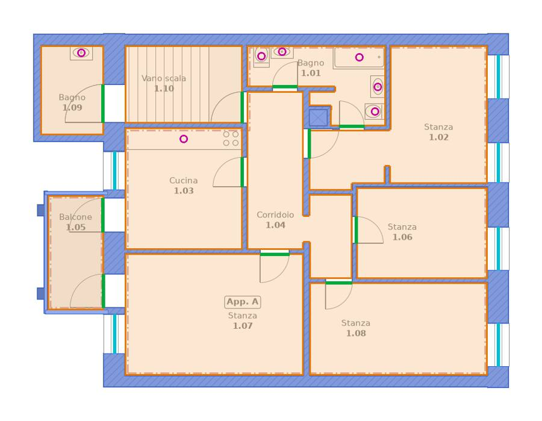
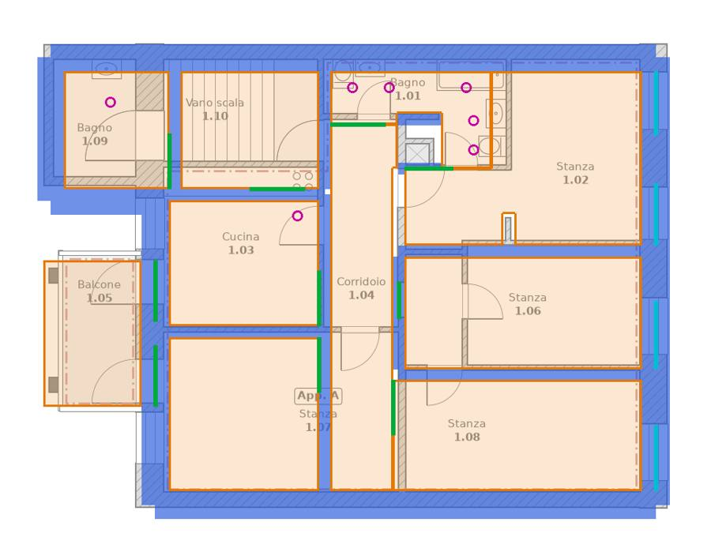

01 · INSPECT
Targeted visual evidence
Gemini zooms into exact regions of the original architectural drawing instead of relying on a single downscaled image.
This recorded evaluation makes the agent’s process visible: it examines the drawing, requests focused crops, measures geometry, drafts a schematic, and submits an answer for automatic scoring.
Gemini zooms into exact regions of the original architectural drawing instead of relying on a single downscaled image.
It asks the environment for room segmentation and area measurements, then checks its draft through an overlay preview.
The final submission is compared with the surveyed answer across walls, rooms, openings, fixtures, and area calibration.
| System / condition | Episodes | Mean reward | Change vs. early Gemini |
|---|---|---|---|
| Early Gemini stop (4 calls) | 15 | 0.141 | — |
| Gemini 3.1 Pro, full benchmark | 45 | 0.342 | +0.201 · 2.43× |
| Drawing-only CV reference | 15 | 0.586 | +0.445 · 4.16× |
| Ground-truth ceiling | 15 | 1.000 | +0.859 · 7.09× |
Reward is a weighted 0–1 score on the fixed 15-plan holdout: walls 25%, rooms 25%, doors 15%, windows 15%, fixtures 10%, and calibrated areas 10%. The full Gemini result uses repeated runs across the held-out split; the early-stop row isolates what happens when the agent submits after only four calls.
We converted Swiss apartment drawings into a formal schematic task with hidden CAD-derived answers and a deterministic scorer.
Gemini receives the drawing plus zoom, scale estimation, label reading, room segmentation, area measurement, preview, and submission tools—up to 30 calls.
Every submission is scored against the same held-out geometry. We compare complete Gemini runs, early exits, a drawing-only CV baseline, and the perfect-answer ceiling.


The repository contains the interactive local evaluator, benchmark design, source data, and reproducible results.